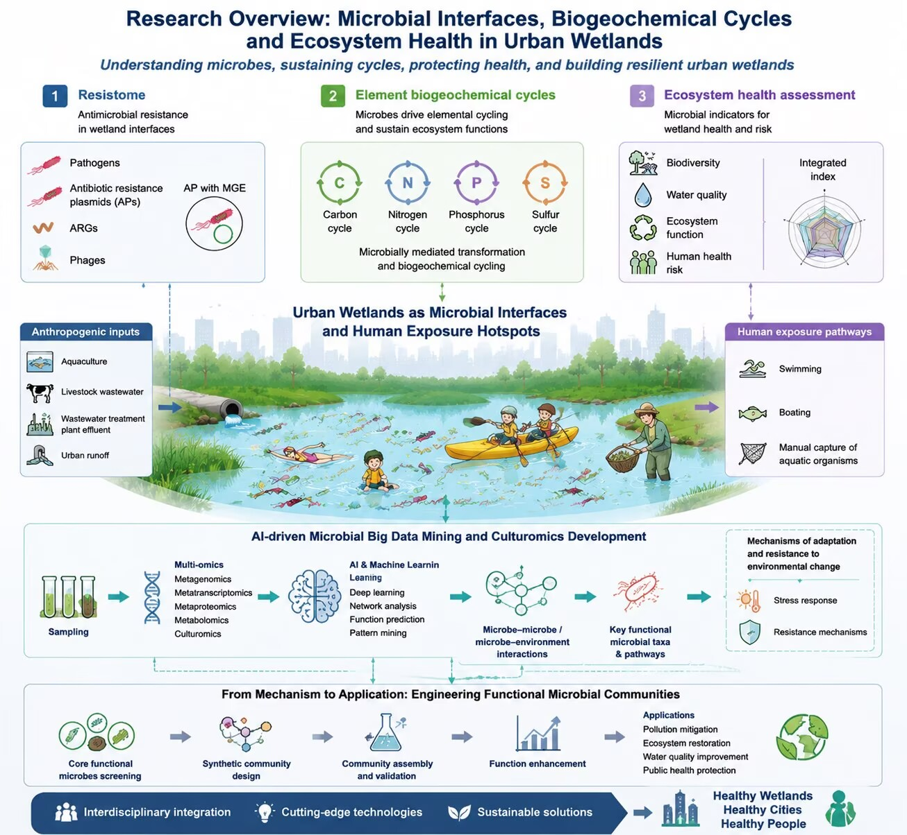

Focusing on three frontier technologies including eco-environmental omics, bioinformatics and big data mining, we investigate the structural and functional diversity of environmental microbial communities. Combined with culturomics development, artificial intelligence is utilized to excavate massive microbial datasets for deciphering intricate environmental microecological interactions, and to quantify the roles of microorganisms in supporting elemental biogeochemical cycles and safeguarding environmental health.
Eco-environmental Omics, Bioinformatics and Big Data Mining
Environmental Microbiome Structure, Function and Ecological Intelligence
